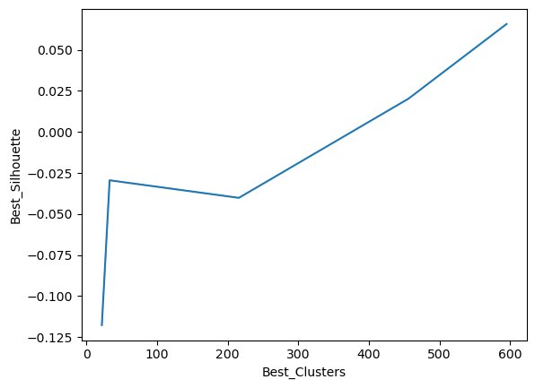
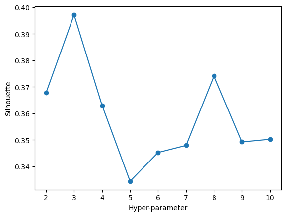

Code
# import the necessary packages...
import numpy as np
import pandas as pd
import seaborn as sns
import matplotlib.pyplot as plt
import sklearn
# read in the feature dataset
df = pd.read_csv('./data/modified_data/nova_features.csv')provide a brief summary (1-2 paragraphs) about your feature data X and what you are trying to achieve with your clustering
brief technical write up about how each clustering method works (KMEAN, DBSCAN, hierarchical clustering). Also include details on model selection methods that you use (elbow, silhouette, gap, etc.). Around 2-4 paragraphs per method is fine - focusing on how it works and what it is supposed to do
# import the necessary packages...
import numpy as np
import pandas as pd
import seaborn as sns
import matplotlib.pyplot as plt
import sklearn
# read in the feature dataset
df = pd.read_csv('./data/modified_data/nova_features.csv')# import relevent libraries for clustering. we will use KMeans, AgglomerativeClustering, MeanShift, Birch, and DBSCAN
from sklearn.cluster import KMeans, AgglomerativeClustering, DBSCAN
from sklearn.cluster import MeanShift, Birch
from sklearn.metrics import pairwise_distances, silhouette_score
import random# for k means clustering we will use the elbow method to find the optimal number of clusters. we will use the inertia_ attribute to find the sum of squared distances of samples to their closest cluster center. we will use the range of 1 to 10 clusters. plot the inertia_ values for each number of clusters. make sure to save it in a dataframe and plot it using matplotlib.
# Create empty lists to store the results
clus = []
distortions = []
inertias = []
silhouette_scores = []
# Loop through the range of clusters
for i in range(2, 11): # Silhouette score is not defined for a single cluster
kmeans = KMeans(n_clusters=i, random_state=0)
kmeans.fit(df)
clus.append(i)
centers = kmeans.cluster_centers_
distortions.append(sum(np.min(pairwise_distances(df, centers, metric='euclidean'), axis=1)) / df.shape[0])
inertias.append(kmeans.inertia_)
# Calculate silhouette score
silhouette_scores.append(silhouette_score(df, kmeans.labels_))
# Create a DataFrame from the lists
results = pd.DataFrame({'Cluster': clus, 'Distortion': distortions, 'Inertia': inertias, 'Silhouette Score': silhouette_scores})
print(results)/Users/williammcgloin/anaconda3/lib/python3.10/site-packages/sklearn/cluster/_kmeans.py:870: FutureWarning: The default value of `n_init` will change from 10 to 'auto' in 1.4. Set the value of `n_init` explicitly to suppress the warning
warnings.warn(
/Users/williammcgloin/anaconda3/lib/python3.10/site-packages/sklearn/cluster/_kmeans.py:870: FutureWarning: The default value of `n_init` will change from 10 to 'auto' in 1.4. Set the value of `n_init` explicitly to suppress the warning
warnings.warn(
/Users/williammcgloin/anaconda3/lib/python3.10/site-packages/sklearn/cluster/_kmeans.py:870: FutureWarning: The default value of `n_init` will change from 10 to 'auto' in 1.4. Set the value of `n_init` explicitly to suppress the warning
warnings.warn(
/Users/williammcgloin/anaconda3/lib/python3.10/site-packages/sklearn/cluster/_kmeans.py:870: FutureWarning: The default value of `n_init` will change from 10 to 'auto' in 1.4. Set the value of `n_init` explicitly to suppress the warning
warnings.warn(
/Users/williammcgloin/anaconda3/lib/python3.10/site-packages/sklearn/cluster/_kmeans.py:870: FutureWarning: The default value of `n_init` will change from 10 to 'auto' in 1.4. Set the value of `n_init` explicitly to suppress the warning
warnings.warn(
/Users/williammcgloin/anaconda3/lib/python3.10/site-packages/sklearn/cluster/_kmeans.py:870: FutureWarning: The default value of `n_init` will change from 10 to 'auto' in 1.4. Set the value of `n_init` explicitly to suppress the warning
warnings.warn(
/Users/williammcgloin/anaconda3/lib/python3.10/site-packages/sklearn/cluster/_kmeans.py:870: FutureWarning: The default value of `n_init` will change from 10 to 'auto' in 1.4. Set the value of `n_init` explicitly to suppress the warning
warnings.warn(
/Users/williammcgloin/anaconda3/lib/python3.10/site-packages/sklearn/cluster/_kmeans.py:870: FutureWarning: The default value of `n_init` will change from 10 to 'auto' in 1.4. Set the value of `n_init` explicitly to suppress the warning
warnings.warn(
/Users/williammcgloin/anaconda3/lib/python3.10/site-packages/sklearn/cluster/_kmeans.py:870: FutureWarning: The default value of `n_init` will change from 10 to 'auto' in 1.4. Set the value of `n_init` explicitly to suppress the warning
warnings.warn( Cluster Distortion Inertia Silhouette Score
0 2 10.622510 447410.233953 0.372238
1 3 8.828917 272970.775541 0.408870
2 4 7.974259 215311.617146 0.390174
3 5 6.985968 163526.599625 0.380241
4 6 6.394550 134984.307974 0.368484
5 7 5.753101 113388.811614 0.384348
6 8 5.309537 94219.154891 0.403127
7 9 5.020084 83855.750340 0.403238
8 10 4.698719 75156.752577 0.386414# plot distortion and inertia for kmeans, you can either plot them seperately or use fig, ax = plt.subplots(1, 2) to plot them in the same figure. Suggest the optimal number of clusters based on the plot.
# Create subplots with 1 row and 3 columns
fig, ax = plt.subplots(1, 3, figsize=(18, 4))
# Plot Distortion
ax[0].plot(results['Cluster'], results['Distortion'], marker='o')
ax[0].set_title('Distortion')
ax[0].set_xlabel('Cluster')
ax[0].set_ylabel('Distortion')
# Plot Inertia
ax[1].plot(results['Cluster'], results['Inertia'], marker='o')
ax[1].set_title('Inertia')
ax[1].set_xlabel('Cluster')
ax[1].set_ylabel('Inertia')
# Plot Silhouette Score
ax[2].plot(results['Cluster'], results['Silhouette Score'], marker='o')
ax[2].set_title('Silhouette Score')
ax[2].set_xlabel('Cluster')
ax[2].set_ylabel('Silhouette Score')
# Display the side-by-side plots
plt.tight_layout()
plt.show()
jorge: add 3 is good empirically using elbow method and silhouette score method also says that so seems constant.
# perform DBSCAN clustering. use the eps and min_samples parameters to find the optimal number of clusters. plot the number of clusters vs the silhouette score. Suggest the optimal number of clusters based on the plot.
best_scores = []
eps = []
clus = []
z1 = [i / 10 for i in range(5, 20)]
z2 = range(2, 10) # explain why 2 to 10 or just do 1 to 10 but then u have to fix smth in the code if i dont remember wrong. i suggest explaining is a common assumption to do here
for i in z1:
max_score = -1
best_cluster = -1
best_eps = -1
for j in z2:
model = DBSCAN(eps=i, min_samples=j)
predics = model.fit_predict(df)
num_clusters = len(pd.Series(predics).unique())
if num_clusters > 1:
score = silhouette_score(df, predics)
if score > max_score:
max_score = score
best_cluster = num_clusters
best_eps = i
best_scores.append(max_score)
clus.append(best_cluster)
eps.append(best_eps)
df1 = pd.DataFrame({'Epsilons': eps, 'Best_Clusters': clus, 'Best_Silhouette': best_scores})
print(df1.sort_values(by="Best_Silhouette", ascending=False))
sns.lineplot(data=df1, x='Best_Clusters',y='Best_Silhouette')
plt.show() Epsilons Best_Clusters Best_Silhouette
0 0.5 595 0.065783
1 0.6 595 0.065783
2 0.7 595 0.065783
3 0.8 595 0.065783
4 0.9 595 0.065783
5 1.0 456 0.020257
10 1.5 33 -0.029439
11 1.6 33 -0.029439
12 1.7 33 -0.029439
6 1.1 216 -0.040136
7 1.2 216 -0.040136
8 1.3 216 -0.040136
9 1.4 216 -0.040136
13 1.8 22 -0.117656
14 1.9 22 -0.117656
from this i can infer that there are no clear clusters as the best silhouette score have over 500 clusters.
jorge: Say that maybe is due to that this clustering method is not suitable for this type of data and that u will confirm with hierarchical and plots with t-sne
from scipy.cluster.hierarchy import dendrogram, linkage
from sklearn.cluster import AgglomerativeClustering
hierarchical_cluster = AgglomerativeClustering(n_clusters=3, affinity='euclidean', linkage='ward') #chose 3 as that is the number of species. We could have changed it.
labels = hierarchical_cluster.fit_predict(df)
print("Cluster Labels total:")
print(list(set(labels)))Cluster Labels total:
[0, 1, 2]/Users/williammcgloin/anaconda3/lib/python3.10/site-packages/sklearn/cluster/_agglomerative.py:983: FutureWarning: Attribute `affinity` was deprecated in version 1.2 and will be removed in 1.4. Use `metric` instead
warnings.warn(Plot the clusters for Agglomerative Clustering
# create linkage for agglomerative clustering, and the dendrogram for the linkage. Suggest the optimal number of clusters based on the dendrogram.
linkage_matrix = linkage(df, method='ward')
plt.figure(figsize=(10, 5))
dendrogram(linkage_matrix, orientation='top', labels=labels, distance_sort='ascending', show_leaf_counts=True)
plt.show()from sklearn.cluster import AgglomerativeClustering
from sklearn.metrics import silhouette_score
import matplotlib.pyplot as plt
import numpy as np
import sklearn.cluster
def maximize_silhouette(X, algo="ag", nmax=None, i_plot=False):
# PARAM
i_print = False
# FORCE CONTIGUOUS
X = np.ascontiguousarray(X)
# LOOP OVER HYPER-PARAM
params = []
sil_scores = []
sil_max = -10
for param in range(2, nmax + 1):
if algo == "ag":
model = AgglomerativeClustering(n_clusters=param).fit(X)
labels = model.labels_
try:
sil_scores.append(silhouette_score(X, labels))
params.append(param)
except ValueError:
continue
if i_print:
print(param, sil_scores[-1])
if sil_scores[-1] > sil_max:
opt_param = param
sil_max = sil_scores[-1]
opt_labels = labels
print("Maximum Silhouette score =", sil_max)
print("OPTIMAL CLUSTERS (btwn 2-10) =", opt_param)
if i_plot:
fig, ax = plt.subplots()
ax.plot(params, sil_scores, "-o")
ax.set(xlabel='Hyper-parameter', ylabel='Silhouette')
plt.show()
return opt_labels
# Example usage:
opt_labels = maximize_silhouette(df, algo="ag", nmax=10, i_plot=True)Maximum Silhouette score = 0.3971383731982046
OPTIMAL CLUSTERS (btwn 2-10) = 3
discuss, illustrate, and compare the results of your various clustering analysis methods. Additionally, answer questions on hw page
summarize and wrap up the report. This is non-technical and should focus on key and important findings and how these findings affect real-life and real people.
ideally use .bibtex to provide in-line citations
Movie Pitch: It’s a movie about high school girls trying to figure out what clique they belong in. They move from clique to clique and eventually stop when they minimize their differences. It’s called K-Means girls.